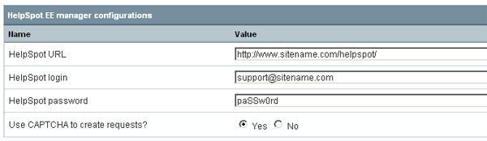

HelpSpot EE manager
HelpSpot EE manager enables integration of HelpSpot helpdesk software by UserScape into ExpressionEngine. It uses PHP API implementation by Joe Landsman, copyrighted by UserScape Inc (used by permission).
The module is available for EE 1.x only. The version for EE 2.x will be developed when EE 1.x modules goes out of beta.
Requirements
You will need both Private and Public API enabled in your HelpSpot installation.
Do not forget to set your HelpSport URL, username and password in module settings.
Support issues
Support is provided through devot:ee. Please include screenshots and other important data into your requests.
Settings
You will have to provide the module with link to your HelpSpot installation, login and password. You can optionally select to use CAPTCHA for creating requests.

Usage
Use as you would use any module :)
The module does not require HelpSpot passwords from customers, as EE authorization should be enough. You can even show requests to non-authorized users, if you like. The only thing you should ask from people is their email or request accesskey.
Tags
- public_request_create_form - prepare form to create new request
- custom_fields_form - add custom fields to request creation form
- public_request_update_form - prepare form to update request (for customer)
- public_request_get_by_id - get request data by passing request ID
- public_request_get_by_key - get request data by passing access key
- public_request_search - search requests by email or member_id
- private_request_search - search requests by email or member_id
- private_customer_password_get - get HelpSpot password by email
- private_request_get - get request data
- public_customer_requests_get - get list of user's request
- private_request_update_form - prepare form to update request data (for support staff)
NOTE: The main difference between private_ and public_ tags is the API that it uses - private or public respectively. Private is intended for staff use and public is for customers. However you might find useful using combination of both. Please also note that some public_ tags still utilize Private API functions, so you'll need to have both APIs enabled even if you intend using only public_ tags.
public_request_create_form
The tag outputs the form for creating new request
{exp:helpspot_ee_manager:public_request_create_form return="support/viewrequest/%%accesskey%%"}
<p><label>Name (required)</label>
<input type="text" name="screen_name" value="{screen_name}" /></p>
<p><label>Email (required)</label>
<input type="text" name="email" value="{email}" /></p>
<p><label>Phone</label>
<input type="text" name="phone" value="" /></p>
<p><label>Category</label>
<select name="category" id="support-category">
{categories}
<option value="{category_id}">{category_name}</option>
{/categories}
</select></p>
<p><input type="checkbox" name="urgent" value="1" /> Urgent?</p>
<div id="support-form-custom-fields"></div>
<script type="text/javascript">
$(document).ready(function() {
$('#support-form-custom-fields').load("/_ajax/support-form-custom-fields/"+$("#support-category").val());
$("#support-category").change(function() {
$('#support-form-custom-fields').load("/_ajax/support-form-custom-fields/"+$("#support-category").val());
});
});
</script>
<p><label>Message to support</label>
<textarea name="note" cols="60" rows="6"></textarea></p>
<p><input type="submit" /></p>
{/exp:helpspot_ee_manager:public_request_create_form}
The mandatory fields for the form are:
- email - email address
- screen_name - screen name or real name (will be parsed into first and last names OR into 'Member xxx' if screen_name is one word)
- note - the actual message to support
The other possible fields are:
- phone - phone number
- urgent - set to 1 if the request as urgent
- category - ID of category to assign support
- Custom# (ex. Custom3) - custom request field. The example above is using jQuery to load the fields based on category selected, see custom_fields_form for more details.
- return - URL to redirect after successful request creation. If not specified, system message will be shown.
return parameter can contain special parameters as URL segments:
- %%accesskey%% will be replaced with access key for created request
- %%request_id%% will be replaced with ID of created request
{categories} is a tag pair that outputs the list of request categories available. It outputs 2 variables:
- category_id - category ID
- category_name - category name
custom_fields_form
The purpose of tag is to output the list of custom fields. It's common use would be together with public_request_create_form.
{exp:helpspot_ee_manager:custom_fields_form category_id="{segment_3}"}
{fields}
<p><label>{field_label}</label>
{field_input}</p>
{/fields}
{/exp:helpspot_ee_manager:custom_fields_form}
The fields loop must be surrounded with {fields} tag pair.
The category_id parameter is optional. Use it if you need to limit the list of fields to specific category - otherwise full custom fields list will be returned
The variables the tag outputs are:
- field_id - the ID of custom field
- field_label - the label, or name, of the field
- field_type - the type of custom field
- field_input - the pre-parsed html input element according to the type of the field. (NOTE: currently supports only 'date', 'select', 'checkbox, 'lrgtext' and 'text' field types - for others simple text input will be used. We suggest using jQuery datepicker for best experience with date fieldtype)
public_request_update_form
The purpose of tag is to create a form for user to update, or reply to the request.
{exp:helpspot_ee_manager:public_request_update_form accesskey="{segment_3}"}
<p><label>Email</label>
<input type="text" name="email" value="{email}" /></p>
<p><label>Message to support</label>
<textarea name="note" cols="60" rows="6"></textarea></p>
<p><input type="submit" /></p>
{/exp:helpspot_ee_manager:public_request_update_form}
The only parameter is accesskey - the access key for request to be updated. It is required.
The form fields are (all required):
- email - email address
- note - the message/reply to be added to request
public_request_get_by_key
The tag lets you display request data having access key specified.
{exp:helpspot_ee_manager:public_request_get_by_key accesskey="{segment_3}" sort="desc"}
<h1>Support request #{request_id}</h1>
<div class="request">
{items}
<div class="request-row">
<span>{request_item_author}</span> on {request_item_date format="%Y-%m-%d %H:%i"}<br />
{request_item_text}
{files}
<p>Attachment: <a href="{file_url}">{file_name}</a></p>
{/files}
</div>
{/items}
{/exp:helpspot_ee_manager:public_request_get_by_key}
The accepted parameters are:
- accesskey (required) - the access key for request
- sort - set to desc to display request replies in descending order (the oldest at the top)
The {custom_fields} tag pair lets you output all custom fields provided with initial request
The variables available inside the {custom_fields} loop:
- field_label - custom field name/label
- field_value - the field value set when creating request
- field_type - the type of field (as set in HelpSpot)
The {items} tag pair loops though all posts in request. Note that only public posts are displayed.
The variables available inside the {items} loop:
- request_item_author - shows who posted the item. Displays 'You' or 'Support' by default, the text can be changed in lang.helpspot_ee_manager.php
- request_item_text - the text of post/reply
- request_item_date format="%Y-%m-%d" - the date of post. EE formatting rules apply
The {files} tag pair can be placed inside {items} tag pair to display files attached to the post. It returns 2 variables:
- file_name - filename of uploaded file
- file_url - link to donwload the attachment
The variables available inside the {items} loop:
- request_item_author - shows who posted the item. Displays 'You' or 'Support' by default, the text can be changed in lang.helpspot_ee_manager.php
- request_item_text - the text of post/reply
- request_item_date format="%Y-%m-%d" - the date of post. EE formatting rules apply
There conditionals available inside the {items} loop inclue:
- if initial - determines whether this is initial request or reply
The variables available outside the loops:
- request_id - ID of request
- accesskey - unique access key for request
- request_status - the status of request
- request_category - the name category that request is assigned to
- request_items_total - total number of posts/replies
There are also conditionals available outside the loops/tag pairs:
- if no_replies - the request did not get any replies from support yet
- if no_results
- if request_open
- if request_urgent
public_request_get_by_id
The tag lets you display request data having request ID specified.
The syntax and available data are the same that for public_request_get_by_key. Please note that using this tag in your public templates might give anyone possibility to view any request by specifing only its ID, so use with caution.
public_request_search
The tag lets you display the list of requests opened by a user.
{exp:helpspot_ee_manager:public_request_search email="{email}"}
{if no_results}
<p>No support requests for you</p>
{/if}
{if '{request_count}'=='1'}
<table class="pm-list">
<tr class="header">
<th width="5%">Request ID</th>
<th width="10%" align="left" nowrap="nowrap">Status</th>
<th width="10%" align="left" nowrap="nowrap">Category</th>
<th width="10%" align="left" nowrap="nowrap">Date open</th>
<th width="65%" align="left">Summary</th>
</tr>
{/if}
<tr>
<td><a href="{path=support/viewrequest/{accesskey}}">{request_id}</a></td>
<td nowrap="nowrap">{request_status}</td>
<td nowrap="nowrap">{request_category}</td>
<td nowrap="nowrap">{request_dateopen format="%Y-%m-%d %H:%i"}</td>
<td>{request_text}</td>
</tr>
{if '{request_count}'=='{request_total}'}</table>{/if}
{/exp:helpspot_ee_manager:public_request_search}
The accepted parameters are:
- email - email address
- member_id - ExpressionEngine member ID
You need to specify either one of these parameters.
Variables available:
- request_total - total number of requests returned
- request_email - email address used to look up requests
- request_count - the index number for each request
- request_id - request ID
- request_password - request password
- request_status - request status (text)
- request_category - request category (text)
- request_category_id - request category ID
- request_dateopen format="%Y-%m-%d" - the date when request has been opened. EE formatting rules apply
- request_text - the actual text of request
- request_author - full name of author
- accesskey - unique access key
There are also conditionals available:
- if no_results
- if request_open
- if request_urgent
private_request_search
The tag lets you display the list of requests opened by a user.
{exp:helpspot_ee_manager:private_request_search email="{email}"}
{if no_results}
<p>No support requests for you</p>
{/if}
{if '{request_count}'=='1'}
<table class="pm-list">
<tr class="header">
<th width="5%">Request ID</th>
<th width="10%" align="left" nowrap="nowrap">Status</th>
<th width="10%" align="left" nowrap="nowrap">Category</th>
<th width="65%" align="left">Summary</th>
</tr>
{/if}
<tr>
<td>{request_id}</td>
<td nowrap="nowrap">{request_status}</td>
<td nowrap="nowrap">{request_category}</td>
<td>{request_text}</td>
</tr>
{if '{request_count}'=='{request_total}'}</table>{/if}
{/exp:helpspot_ee_manager:private_request_search}
The accepted parameters are:
- email - email address
- member_id - ExpressionEngine member ID
- getpassword - set to 'true' if you want to get customer's HelpSpot password
You need to specify either one of these parameters.
Variables available:
- customer_password - customer's HelpSpot password. Available only if getpassword='true'.
- request_total - total number of requests returned
- request_count - the index number for each request
- request_id - request ID
- request_password - request password
- request_status - request status (text)
- request_category - request category (text)
- request_text - the actual text of request
There are also conditionals available:
- if no_results
- if request_open
- if request_urgent
private_customer_password_get
Get HelpSpot portal password by providing email address.
{exp:helpspot_ee_manager:private_customer_password_get email="mail@address.com"}
No variables returned, no closing tag needed.
public_customer_requests_get
Get list of user's request by providing email and password. Currently is capable to return only raw data.
{exp:helpspot_ee_manager:public_customer_requests_get email="email@address.com" password="paSSw0rd"}
The accepted parameters are:
- email - email address
- password - HelpSpot password
Does not return any variables, only raw data.
private_request_update_form
The purpose of tag is to create a form for support staff to update, or reply to the request.
{exp:helpspot_ee_manager:private_request_update_form request_id="{segment_3}"}
<p><label>Email</label>
<input type="text" name="email" value="{email}" /></p>
<p><label>Message to user</label>
<textarea name="note" cols="60" rows="6"></textarea></p>
<p><input type="submit" /></p>
{/exp:helpspot_ee_manager:private_request_update_form}
The only parameter is request_id - the ID of request to be updated. It is required.
The form fields are (all required):
- email - email address
- note - the message/reply to be added to request
Be careful using this tag, it is indended for staff only, not for your site visitors.
Changelog
- v 0.1 (2010-10-28) - initial release